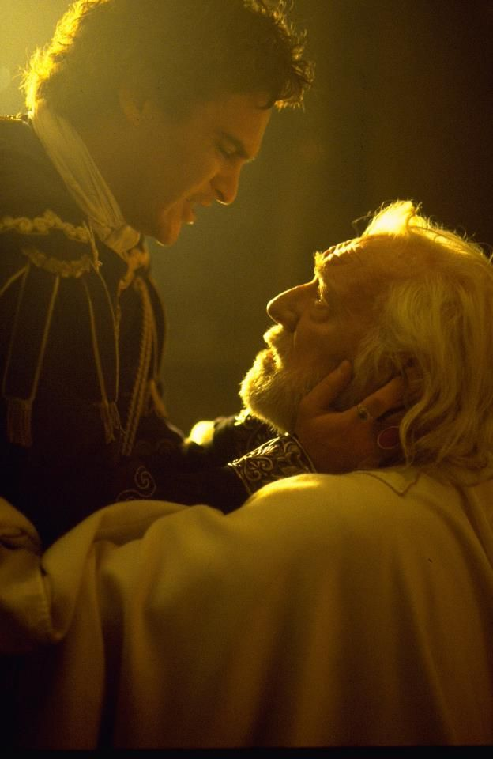

Marcus Aurelius reigned as Roman emperor from 161 to 180 CE and is best known as the last of the Five Good Emperors of Rome (following Nerva, Trajan, Hadrian, and Antoninus Pius) and as the author of the philosophical work Meditations. He has long been respected as embodying the Platonic concept of the Philosopher King as articulated in Plato's Republic: a ruler who does not seek power for his own sake but to help his people. He was introduced to philosophy at a young age and his Meditations, composed while on campaign in his fifties, make clear that he held a deeply philosophical, specifically Stoic, view throughout his life.

In the modern-day, he is probably best known from the popular film Gladiator (2000 CE) as the father of Commodus (r.177-192 CE) whose decision to pass over his son as successor serves as the point of departure for the film's plot. Contrary to his depiction in the film, Aurelius was not killed by Commodus and, in fact, Commodus would co-rule with his father from 177-180 CE and succeeded him without opposition; though he would prove to be one of the worst rulers Rome would have to endure and his reputation suffered further by comparison with his father.
Marcus Aurelius is introduced to philosophy by his teacher Diognetus.
Marcus Aurelius adopted by Antoninus Pius as successor.
Marcus Aurelius marries Faustina, daughter of Antoninus Pius.
Parthian Wars with Rome; Lucius Verus commands Rome's forces in the field.
Reign of Roman Emperor Marcus Aurelius.
Marcus Aurelius rules with Lucius Verus.
Marcus Aurelius persecutes new sect of Christianity.
Lucius Verus and Marcus Aurelius celebrate a shared triumph, both are hailed as Pater Patriae.
Germanic tribes cross the Danube into the Roman Empire.
Lucius Verus dies.
Marcus Aurelius rules alone.
Marcus Aurelius leads campaigns against the Germanic tribes; writes his famous Meditations.
Marcus Aurelius tours eastern provinces of empire; his wife Faustina dies.
A huge bronze statue of Marcus Aurelius on horseback is erected in Rome.
Marcus Aurelius rules with Commodus.
The Column of Marcus Aurelius and Faustina is erected in Rome. It depicts in relief sculpture the emperors' campaigns across the Danube.